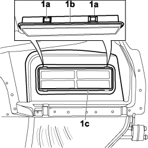

5010C60 LH OR RH REAR AIR OUTLET VENT (ONE) - R.R
- Path
- Procedures > 50 AUXILIARY UNITS > 5010 CLIMATE CONTROL - MISCELLANEOUS > 5010C AIR VENTS > 5010C60 LH OR RH REAR AIR OUTLET VENT (ONE) - R.R
- Kind
- repair procedure (removal / refitting; the operation number is the code)
- Applies to
- all engines; all production periods
- Interactive page
- https://sloeber94.github.io/elrnDB-fCrm/en/#/194000590
Applies to: all engines; all production periods
 Removing
Removing
 Refitting
Refitting- Turn the ignition key to the OFF position.
- Open the bonnet.
- Disconnect the negative battery terminal.
Description | Connector | |
|---|---|---|
BATTERY |
Working on both sides:
Op. 4450B13 REAR WHEELS (TWO) - R.R
Op. 7040B18 LOAD COMPARTMENT LOAD PLATFORM SIDE TRIM ONE LH OR RH - R.R
Op. 5570T95 SUBWOOFER WITH AMPLIFIER BUILT INTO SOUND SYSTEM - R.R.
1. Using a suitable size screwdriver, press the two upper retaining tabs (1a), without damaging the seal (1b), and remove the vent (1c) from the vehicle.

Applies to: all engines; all production periods
Refitting
Removing- Check that the vent and the seal are not damaged.
- Fit the air outlet vent in place and press it to attach the retaining tabs.
Op. 5570T95 SUBWOOFER WITH AMPLIFIER BUILT INTO SOUND SYSTEM - R.R.
Op. 7040B18 LOAD COMPARTMENT LOAD PLATFORM SIDE TRIM ONE LH OR RH - R.R
Working on both sides:
Op. 4450B13 REAR WHEELS (TWO) - R.R
- Connect the negative battery terminal.
Description | Connector | |
|---|---|---|
BATTERY |